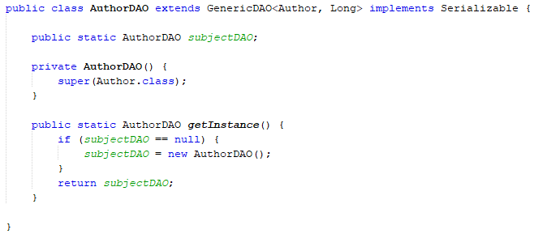
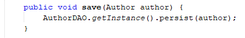

Singleton
O Padrão Singleton tem como definição garantir que uma classe tenha apenas uma instância de si mesma e que forneça um ponto global de acesso a ela.
Ele foi utilizado nas classes DAO abaixo:
- AuthorDAO (Autor)
- BookDAO (Livro)
- CopyDAO (Exemplar)
- LoanDAO (Empréstimo)
- MagazineDAO (Revista)
- PublisherDAO (Editora)
- ReservationDAO (Reserva)
- SubjectDAO (Assunto)
- UserDAO (Usuário)
Além das classes DAO ele foi utilizado nas classes util abaixo:
Obs.: A classe persistencia é muito utilizada com o Singleton pois garante que só exista uma conexão ao Banco de Dados.
Exemplo de implementação:

Exemplo de instanciação da classe:
